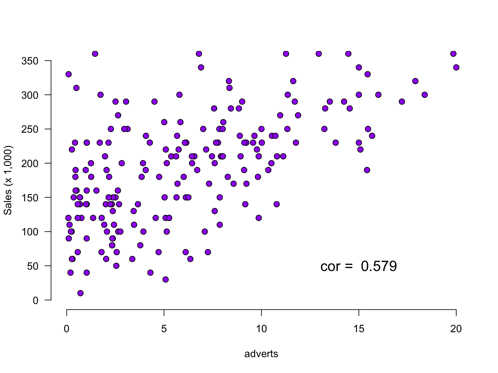
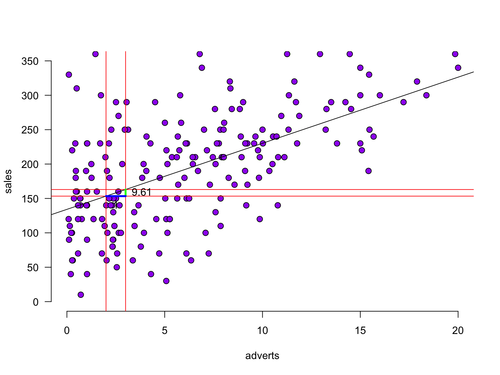

Regression
(one predictor)
Regression
\[\LARGE{\text{outcome} = \text{model prediction} + \text{error}}\]
In statistics, linear regression is a linear approach for modeling the relationship between a scalar dependent variable y and one or more explanatory variables denoted X. The case of one explanatory variable is called simple linear regression.
\[\LARGE{Y_i = \beta_0 + \beta_1 X_i + \epsilon_i}\]
In linear regression, the relationships are modeled using linear predictor functions whose unknown model parameters are estimated from the data.
Source: wikipedia
Assumptions
A selection from Field:
- Sensitivity
- Homoscedasticity
Sensitivity
Outliers
- Extreme residuals
- Cook’s distance (< 1)
- Check Q-Q and residuals plots
Sensitivity
Homoscedasticity
- Variance of residual should be equal across all expected values
- Look at scatterplot of standardized: predicted values \(\times\) residuals. Roughly round shape is needed
- After the analysis is complete because it’s based on the residuals
The data
The data

Calculate regression parameters
\[{sales}_i = b_0 + b_1 {airplay}_i + \epsilon_i\]
airplay <- data$airplay
sales <- data$salesCalculate \(b_1\)
\[b_1 = r_{xy} \frac{s_y}{s_x}\]
# Calculate b1
cor.sales.airplay <- cor(sales,airplay)
sd.sales <- sd(sales)
sd.airplay <- sd(airplay)
b1 <- cor.sales.airplay * ( sd.sales / sd.airplay )
b1[1] 3.939182Calculate \(b_0\)
\[b_0 = \bar{y} - b_1 \bar{x}\]
mean.sales <- mean(sales)
mean.airplay <- mean(airplay)
b0 <- mean.sales - b1 * mean.airplay
b0[1] 84.87251The slope

The slope

The slope - zoomed in

Define regression equation
\[\widehat{sales} = {model} = b_0 + b_1 {airplay}\]
So now we can add the expected sales based on this model
prediction <- b0 + b1 * airplay
data$prediction <- round(prediction, 2)Predicted values
Let’s have a look
\(y\) vs \(\hat{y}\)
And lets have a look at this relation between model prediction and observed

Error
The error / residual is the difference between the model predictions and observed values
error <- sales - prediction
data$error <- round(error, 2)Model fit
- The fit of the model can be viewed in terms of the correlation (\(r\)) between the predictions and the observed values: if the predictions are perfect, the correlation will be 1.
- For simple regression, this is equal to the correlation between airplay and sales. For multiple regression (next lecture), these will differ.
r <- cor(prediction, sales)
r[1] 0.5989188Explained variance
Squaring this correlation gives the proportion of explained variance
r^2[1] 0.3587037Explained variance visually (10 participants)
\(r^2\) is the proportion of blue to orange, while \(1 - r^2\) is the proportion of red to orange
And because \(r^2\) is the explained variance, \(1 - r^2\) is the unexplained variance.
Test model fit
Compare model to mean Y (sales) as model
\[F = \frac{(n-p-1) r^2}{p (1-r^2)}\]
Where \({df}_{model} = n - p - 1 = N - K - 1\).
p <- 1
fStat <- ( (n-p-1)*r^2 ) / ( p*(1-r^2) )
fStat[1] 110.7496Signal to noise
Given the description of explained variance, F can again be seen as a proportion of explained to unexplained variance. Also known as a signal to noise ratio.
df.model <- p # n = rows, p = predictors
df.error <- n - p - 1
SS_model <- sum((prediction - mean(sales))^2)
SS_error <- sum((sales - prediction)^2)
MS_model <- SS_model / df.model
MS_error <- SS_error / df.error
fStat <- MS_model / MS_error
fStat[1] 110.7496Calculate t-values for b’s for hypothesis testing
We can also convert each \(b\) to a \(t\)-statistic, since that has a known sampling distribution:
\[\begin{aligned} t_{n-p-1} &= \frac{b - \mu_b}{{SE}_b} \\ df &= n - p - 1 \\ \end{aligned}\]
Where \(b\) is the beta coefficient, \({SE}\) is the standard error of the beta coefficient, \(n\) is the number of subjects and \(p\) the number of predictors. \(\mu_b\) is the null-hypothesized value for \(b\) - usually set to 0.
# Get Standard error's for b (bonus)
se.b1 <- sqrt(MS_error / (var(airplay) * (n-1))); se.b1[1] 0.3743129# Calculate t for b1
mu.b1 <- 0
t.b1 <- (b1 - mu.b1) / se.b1; t.b1[1] 10.52377n <- nrow(data) # number of rows
p <- 1 # number of predictors
df.b1 <- n - p - 1P-values of \(b_1\)
library("visualize")
# p-value for b1
visualize.t(c(-t.b1,t.b1),df.b1,section='tails')
Visualize
Instead of obtaining the p-value by locating the t in the t-distribution, we can locate the F in the F-distribution
visualize.f(fStat, df.model, df.error, section='upper')It’s all the same thing…
fStat[1] 110.7496t.b1^2[1] 110.7496So how many @!&#$ ways do we have for assessing an association?!
# the correlation between x and y, standardized (between -1, 1)
cor(sales, airplay) [1] 0.5989188# the covariance between x and y, unstandardized
cov(sales, airplay)[1] 593.0151# regression coefficient in linear regression, standardized (not bounded)
# generalizes easily to settings with multiple predictors
b1 [1] 3.939182# t-statistic: standardized difference between b1 and 0
t.b1[1] 10.52377# The metrics below are more indicative of an overall model's performance
# the correlation between y and model prediction, standardized (between -1, 1)
cor(sales, prediction) # can be squared to get proportion explained variance[1] 0.5989188# F: signal/noise ratio of a model
fStat [1] 110.7496